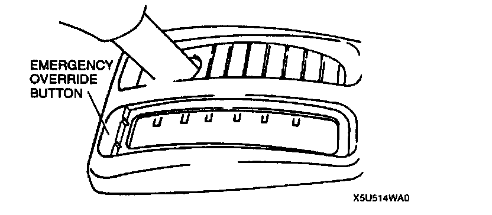

Emergency Override Button
EMERGENCY OVERRIDE BUTTON INSPECTION1. Verify that the selector lever is locked in P position.
2. Remove the indicator panel cover by using a screwdriver.

3. Insert the screwdriver into the emergency override hole, push down, and verify that the selector lever can be shifted from P position.
4. If not as specified, inspect or replace the shift-lock actuator.